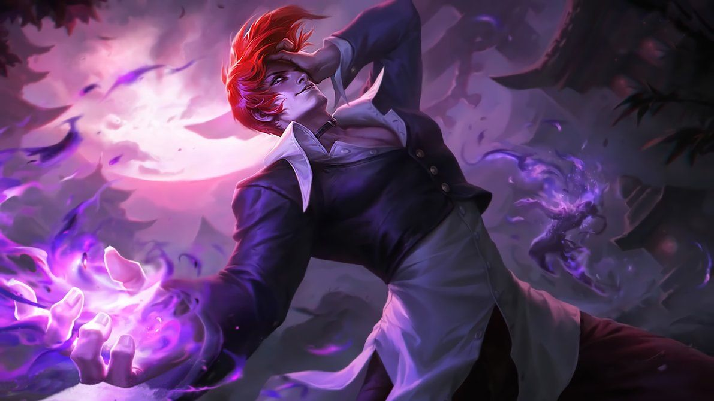

PERKEMBANGAN GAME MOBILE LEGENDS di INDONESIA
MOBILE LEGENDS BANG BANG
Kemajuan game mobile melesat cepat berkat munculnya ponsel touchscreen di awal tahun 2009. Bahkan hingga kini game mobile telah menyaingi game konsol serta game PC. Hingga pada Juli 2016, Mobile Legends: Bang Bang (MLBB) memasuki dunia mobile gaming di Indonesia dan sukses menarik perhatian para pemain..Baca selengkapnya >>>>>

TEAM REX REGUM QEON (RRQ)
Sejarah Singkat RRQ
Didirikan pada Oktober 2013, tim ini awalnya terdiri dari para pemain DotA 2 terbaik asal Indonesia yang sudah dikenal baik dalam komunitas esports internasional. Rex Regum sendiri memiliki arti terjemahan dari bahasa Latin, yaitu king of kings, atau raja segala raja.Baca selengkapnya >>>>>
8 Team Esport Mobile Legends ikuti Turnamen MPL Season 5
MPL season kelima masih mempertandingkan delapan tim eSports. Mereka adalah EVOS eSports, Rex Regum Qeon (RRQ), Alter Ego, Onic eSports, Aura eSports, Bigetron eSports, Geek Fam ID, dan Genflix Aerowolf.
Baca selengkapnya di >>>>>